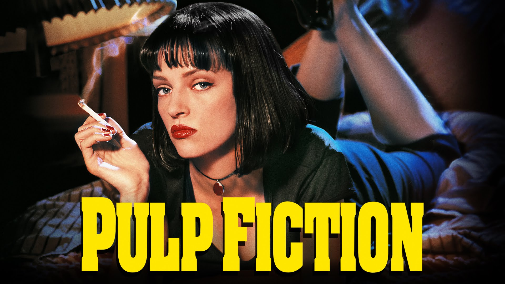
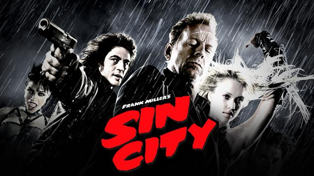
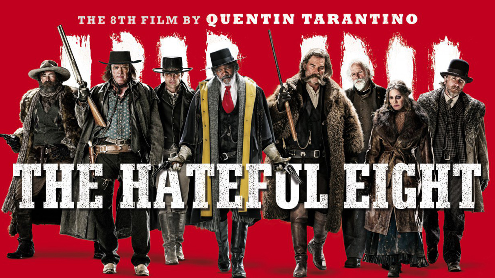
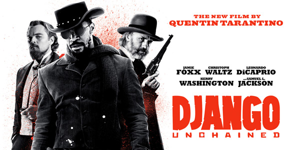

Kill Bill: Volume 1 is a 2003 American film written and directed by Quentin Tarantino. It stars Uma Thurman as the Bride, who swears revenge on a team of assassins (Lucy Liu, Michael Madsen, Daryl Hannah, and Vivica A. Fox) and their leader Bill after they try to kill her and her unborn child.

pulp fiction
Pulp Fiction is a 1994 American crime film written and directed by Quentin Tarantino, based on a story by Tarantino and Roger Avary, and starring John Travolta, Samuel L. Jackson, Bruce Willis, Ving Rhames, and Uma Thurman. The film tells a few stories of criminal Los Angeles. .
From Dusk till Dawn
From Dusk till Dawn is a 1996 American black comedy action horror film directed by Robert Rodriguez and written by Quentin Tarantino.it stars George Clooney, Tarantino, Harvey Keitel and Juliette Lewis. After enjoying modest success at the box office, it has since become a cult film.

sin city
sin city is a fill from 2016.The film stars an ensemble cast led by Jessica Alba, Benicio del Toro, Brittany Murphy, Clive Owen, Mickey Rourke, Bruce Willis, and Elijah Wood, and featuring Alexis Bledel, Michael Clarke Duncan, Rosario Dawson, Carla Gugino, Rutger Hauer, Jaime King, Michael Madsen, Nick Stahl, and Makenzie Vega among others.

The Hatefull eight
The Hateful Eight is a 2015 American Western film written and directed by Quentin Tarantino. It stars Samuel L. Jackson, Kurt Russell, Jennifer Jason Leigh, Walton Goggins, Demián Bichir, Tim Roth, Michael Madsen, and Bruce Dern as eight strangers who seek refuge from a blizzard in a stagecoach stopover some time after the American Civil War.

Django unchained
Django Unchained is a 2012 American revisionist Western film written and directed by Quentin Tarantino, starring Jamie Foxx, Christoph Waltz, Leonardo DiCaprio, Kerry Washington, and Samuel L. Jackson, with Walton Goggins, Dennis Christopher, James Remar, and Don Johnson in supporting roles. Set in the Old West and Antebellum South.